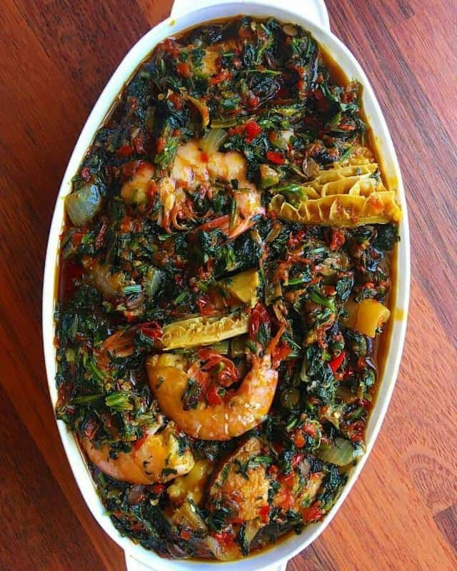
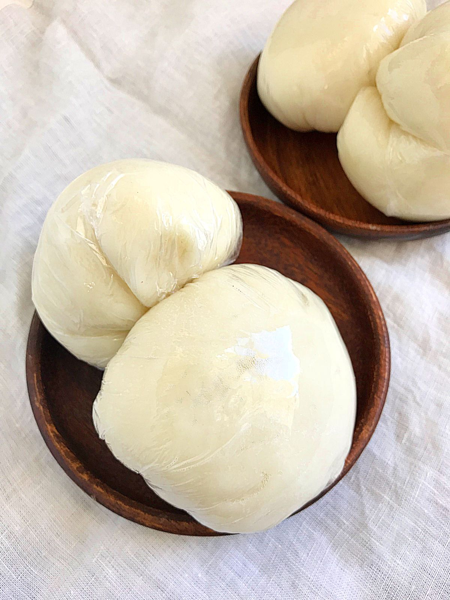
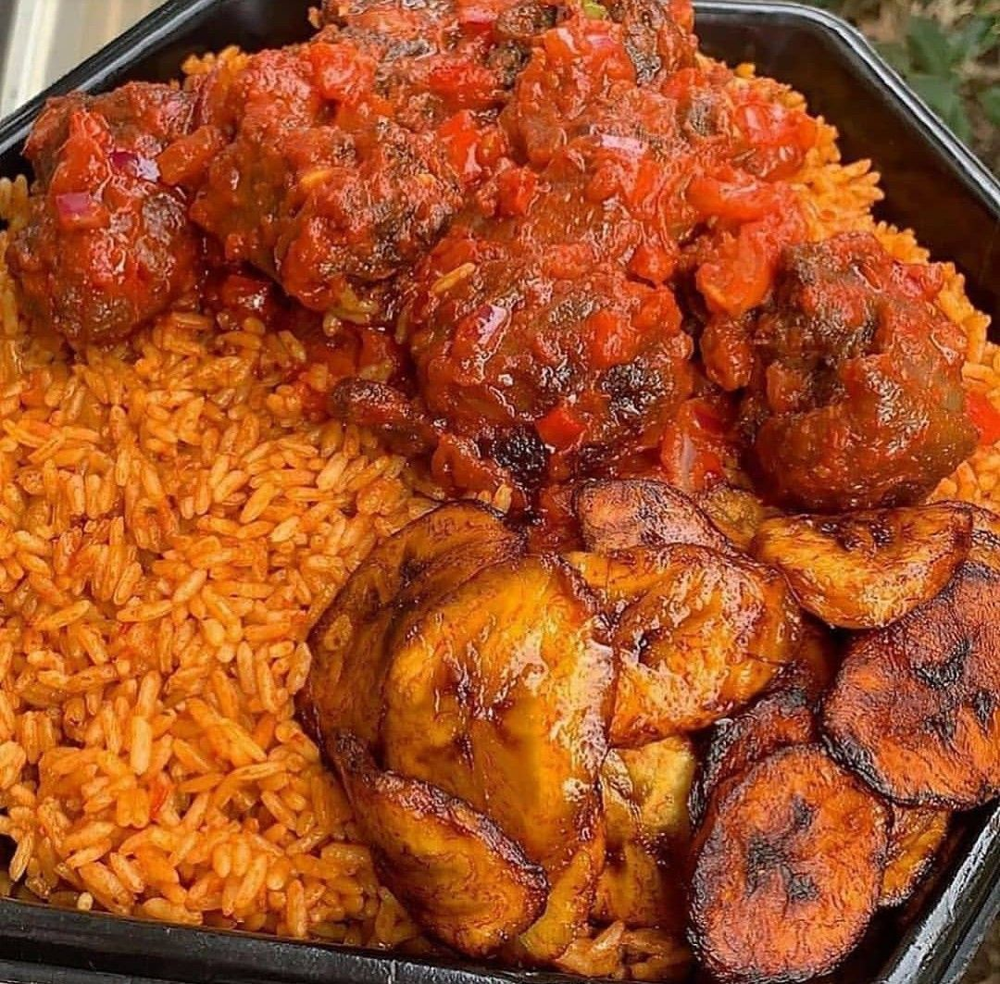
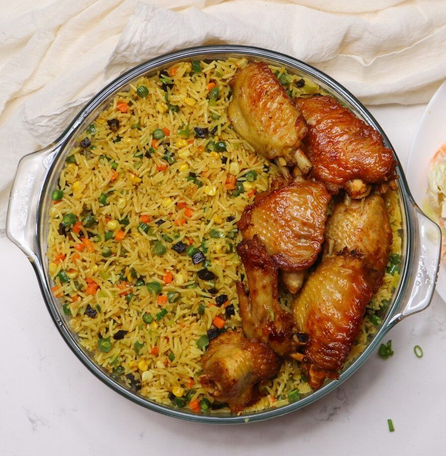
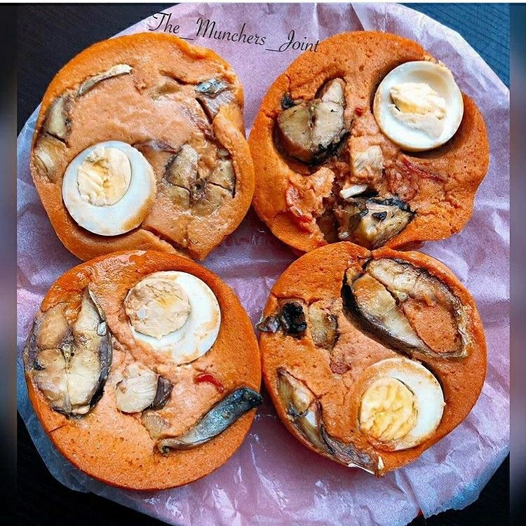
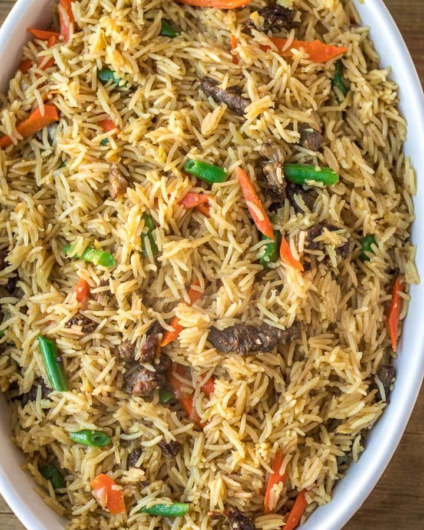

Efo Riro
Spinach stew made with palm oil, assorted meats, and a blend of tomatoes, peppers, and onions, often flavored with locust beans for a deep, savory taste.
 Ewedu, Gbegiri & Assorted Soft Meat
Ewedu, Gbegiri & Assorted Soft Meat
Boil and blend peeled beans for creamy gbegiri, cook and mash jute leaves for smooth ewedu, and season tender assorted meats.
 Amala Gbona
Amala Gbona
Boil water, gradually stir in yam flour (elubo) until it thickens into a smooth, stretchy dough, then stir until soft and well-cooked.

Semolina
Boil water, then gradually stir in semovita flour while mixing continuously to avoid lumps, and turn until smooth and stretchy.
 Ofe Nsala (White Soup)
Ofe Nsala (White Soup)
Made by boiling seasoned catfish or chicken, blended crayfish and uziza, and thickened with pounded yam for a rich, spicy, oil-free soup.
 Yellow Eba
Yellow Eba
Boil water, gradually stir in yellow garri while mixing continuously to avoid lumps, then turn until smooth and stretchy.

jollof rice,plaintain and fried tasty chicken
Cook a rich tomato-based sauce with spices, add rice and simmer until tender for Jollof rice, fry ripe plantains until golden, and season, boil, then fry or bake the chicken until crispy and cooked through.

fried rice
sauté garlic and vegetables in oil, add cooked rice, soy sauce, and seasonings, then stir-fry with beaten eggs and your choice of protein until heated through and well mixed.

moimoi fish with egg
moi fish and egg, season and steam or bake the moi fish until tender, then scramble eggs separately with onions, tomatoes, and spices, and serve them together as a flavorful dish.h.

coconut rice and veggies
coconut rice and veggies, simmer rice in coconut milk with a pinch of salt until tender, then sauté mixed vegetables with spices and combine for a rich, flavorful dish.
 Chicken and chips
Chicken and chips
chicken and chips, season and bake or fry the chicken until golden and cooked through, while frying or baking sliced potatoes until crispy and golden brown.
 Boil soft yam and fried egg
Boil soft yam and fried egg
boiled yam and fried egg, peel and boil yam slices until tender, then fry whisked eggs with onions, tomatoes, and peppers for a tasty, simple meal.